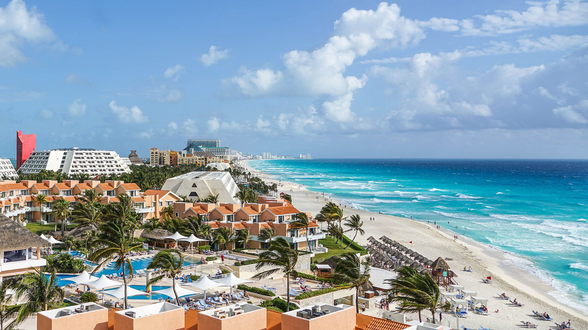
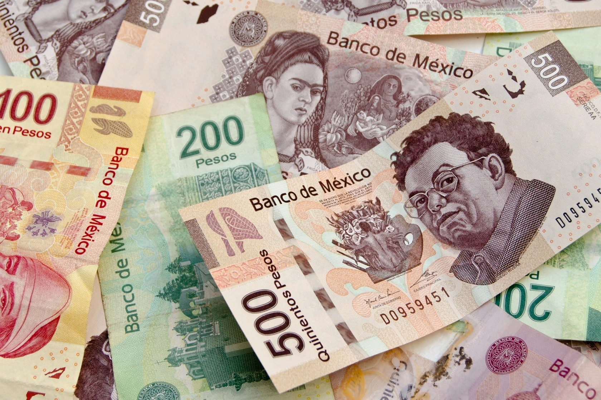
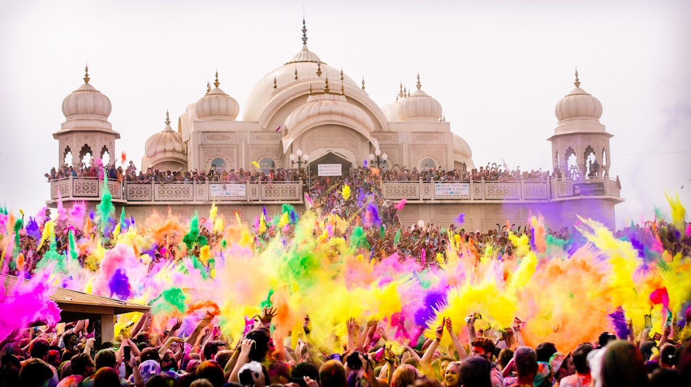
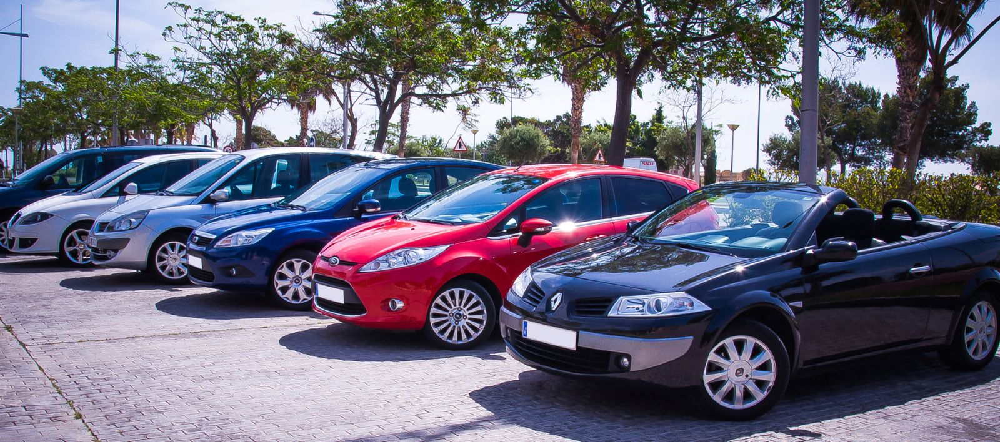
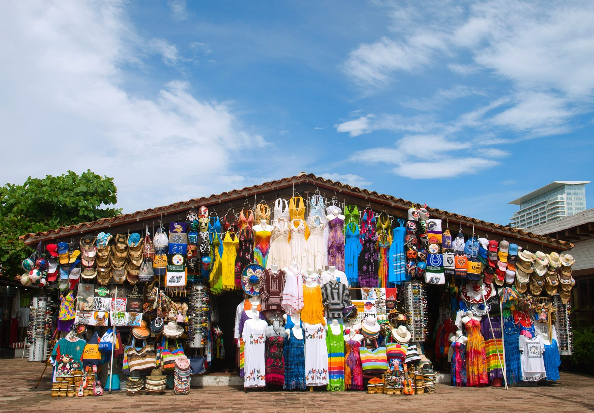

Памятка: Мексика
Туристам, выезжающим в мексику
ПЕРЕД ОТЪЕЗДОМ
Проверьте наличие необходимых для поездки документов:
Заграничный паспорт (паспорт должен быть действителен в течение не менее ШЕСТИ месяцев после даты окончания поездки, и иметь не менее двух свободных страниц для проставления визы); ксерокопию загранпаспортов (могут пригодиться при утрате загранпаспорта и в случае иных непредвиденных обстоятельств); авиабилеты или маршрут/квитанции электронного билета; ваучер; страховой медицинский полис; разрешение на въезд в Мексику - виза.

В случае путешествия с детьми:
Несовершеннолетний гражданин Российской Федерации, следующий совместно хотя бы с одним из родителей, ДОЛЖЕН ВЫЕЗЖАТЬ ИЗ РОССИЙСКОЙ ФЕДЕРАЦИИ ТОЛЬКО ПО СВОЕМУ ЗАГРАНИЧНОМУ ПАСПОРТУ.
Без необходимости оформления для ребенка отдельного заграничного паспорта несовершеннолетний гражданин Российской Федерации до 14 лет может выехать совместно хотя бы с одним из родителей, если он вписан в ОФОРМЛЕННЫЙ ДО 01 МАРТА 2010 ГОДА заграничный паспорт выезжающего вместе с ним родителя. В паспорт родителя в этом случае ОБЯЗАТЕЛЬНО должна быть вклеена фотография ребенка, независимо от его возраста, на которой должна стоять печать паспортно-визовой службы. Отсутствие фотографии или печати является основанием для отказа ребенку в пересечении границы. Выезд из Российской Федерации несовершеннолетних детей, сведения о которых внесены в паспорта сопровождающих их родителей, оформленные до 01 марта 2010 года, осуществляется по срокам действия этих паспортов.
На заграничные паспорта, оформленные после 1 марта 2010 года, распространяются нормы Постановления Правительства РФ №13 от 19 января 2010 года о том, что внесение сведений о детях в паспорт, удостоверяющий личность родителя, не дает права ребенку на выезд за пределы территории Российской Федерации без документа, удостоверяющего личность гражданина Российской Федерации за пределами территории Российской Федерации.
При следовании несовершеннолетнего российского гражданина через государственную границу Российской Федерации совместно с одним из родителей, предъявлять письменное согласие второго родителя не требуется, если только от него ранее в пограничные органы не поступало заявления о своем несогласии на выезд из Российской Федерации своих детей.
Если у несовершеннолетнего ребенка и выезжающего совместно с ним родителя разные фамилии, то рекомендуем взять с собой нотариально заверенную копию свидетельства о рождении — для подтверждения родства. На практике отсутствие такого подтверждения служило основанием для отказа ребенку в пересечении границы.
Подробную информацию по этому вопросу Вы можете получить, ознакомившись с памяткой «Порядок выезда за границу несовершеннолетних граждан РФ», размещенной на нашем сайте http://www.anextour.com в разделе «Памятки туристам».
Беременным женщинам, у которых роды предполагаются в течение ближайших четырех недель, необходимо представить письменное согласие врача на полет. Медицинское заключение должно быть оформлено не менее чем за неделю до даты перелета. В отсутствии документов сотрудники авиакомпании имеют полное право отказать в авиаперевозке или потребовать медицинского освидетельствования в аэропорту вылета. Перевозка беременной осуществляется при условии, что перевозчик не несет никакой ответственности перед Пассажиркой за последствия для нее, что удостоверяется ее гарантийным обязательством (распиской).

Собирая багаж:
Рекомендуем все ценные вещи, документы и деньги положить в ручную кладь и взять с собой в самолет. В багаж следует упаковать все металлические острые и режущие предметы (маникюрные ножницы, пилочки для ногтей, перочинный ножик и т.п.), а также любые жидкости, гели и аэрозоли (за исключением, если в этом есть необходимость, детского питания и лекарств) - проносить подобные предметы в ручной клади ЗАПРЕЩЕНО.
Не забывайте собрать и взять с собой аптечку первой помощи, которая поможет Вам при легких недомоганиях, сэкономит Ваше время на поиски лекарственных средств и избавит от проблем общения на иностранном языке.
В РОССИЙСКОМ АЭРОПОРТУ ВЫЛЕТА/ПРИЛЕТА
Перед выездом в аэропорт рекомендуем получить дополнительную информацию о возможно произошедших изменениях в условиях вылета Вашего рейса, используя возможности сайта авиакомпании, выполняющей рейс, или по телефону ее справочной службы.
Рекомендуем заблаговременно, не позднее, чем за три часа до вылета рейса, прибыть к месту регистрации пассажиров для прохождения установленных процедур регистрации, оформления багажа, и выполнения требований, связанных с пограничным, таможенным, санитарно-карантинным, ветеринарным и другими видами контроля, установленными законодательством РФ.
Таможенный контроль до начала путешествия
Если Вы не перемещаете через границу валюту и предметы, которые необходимо декларировать, то Вам следует проходить зону таможенного контроля по «Зеленому коридору».
Без предъявления документов и без внесения сведений о валюте в пассажирскую таможенную декларацию туристы имеют право вывезти наличную иностранную валюту и/или валюту Российской Федерации, а также дорожные чеки на сумму не более 10.000 долларов США. При вывозе физическими лицами иностранной валюты и/или валюты Российской Федерации в эквиваленте до 10.000 долларов США, либо дорожных чеков в сумме, превышающей 10.000 долларов США, эти суммы средств должны быть задекларированы в пассажирской таможенной декларации.
На денежные средства, вывозимые с помощью банковской карты, ограничений нет. Банковскую карту декларировать не требуется.
ВНИМАНИЕ! ЗАПРЕЩЕНО на выезде и въезде! ПЕРЕМЕЩЕНИЕ КУЛЬТУРНЫХ ЦЕННОСТЕЙ, ОБЪЕКТОВ ДИКОЙ ФАУНЫ и ФЛОРЫ, находящихся под угрозой исчезновения, ОРУЖИЯ И БОЕПРИПАСОВ к нему БЕЗ РАЗРЕШЕНИЯ УПОЛНОМОЧЕННЫХ ОРГАНОВ.
Незаконное перемещение товаров или валюты через таможенную границу Российской Федерации или их недекларирование, либо недостоверное декларирование влечет за собой административную или уголовную ответственность.
ВНИМАНИЕ! ЗАПРЕЩЕНО на выезде и въезде! ПРИНИМАТЬ ОТ ПОСТОРОННИХ ЛИЦ чемоданы, посылки и другие предметы для перевозки на борту воздушного судна.
Таможенный контроль по окончанию путешествия
Если Вы не перемещаете через границу валюту и предметы, которые необходимо декларировать, то Вам следует проходить зону таможенного контроля по «Зеленому коридору».
Без уплаты таможенных пошлин можно ввозить в Российскую Федерацию товары для личного пользования на сумму не более 65 тысяч рублей, общим весом – не более 50 килограммов.
Физическое лицо не моложе 17 лет может ввозить без уплаты таможенных пошлин: до 3-х литров алкогольных напитков; 50 шт. сигар, 100 шт. сигарилл, 200 шт. сигарет, 0,25 кг табака; 250 граммов икры осетровых рыб в заводской упаковке.
При единовременном ввозе в Россию физическими лицами наличной иностранной валюты и/или валюты Российской Федерации, а также дорожных чеков, внешних и/или внутренних ценных бумаг в документарной форме в сумме, в эквиваленте превышающей 10.000 долларов США, сведения о ней необходимо внести в пассажирскую таможенную декларацию. Декларации также подлежат: вывозимые драгоценные металлы, камни, культурные ценности, государственные награды РФ, редкие животные и растения, наркотические, психотропные, сильнодействующие, ядовитые, радиоактивные вещества, химикаты, высокочастотные устройства, радиоэлектронные, транспортные средства, ядерные материалы, информация, связанная с НТП для изготовления оружия массового поражения, продукция военного характера.
РЕГИСТРАЦИЯ НА РЕЙС И ОФОРМЛЕНИЕ БАГАЖА
Регистрация пассажиров и оформление багажа производятся на основании именного авиабилета или распечатанной на бумажном носителе маршрут/квитанции электронного билета, а также заграничного паспорта пассажира.
При регистрации пассажиру выдается посадочный талон, в который необходимо сохранять до момента возможного предъявления авиакомпании претензий по качеству предоставленных услуг авиаперевозки.
Помните, что регистрация на рейс заканчивается за 40 минут до времени вылета рейса, указанного в билете по местному времени. Пассажиру, опоздавшему ко времени окончания регистрации пассажиров и оформления багажа или посадки в воздушное судно, может быть отказано в перевозке.
Рекомендуем отдельно уточнять в авиакомпании нормы бесплатного провоза и габариты багажа, принимаемого к перевозке.
За провоз багажа сверх установленной нормы бесплатного провоза багажа, взимается дополнительная плата по тарифу, установленному перевозчиком.
Перевозчик имеет право отказать туристу в перевозе багажа, вес или объем которого не соответствуют установленным нормам.
ПАСПОРТНЫЙ КОНТРОЛЬ
Для прохождения пограничного контроля необходимо предъявить заграничный паспорт. Пограничным органам ФСБ России при осуществлении пограничного контроля предоставлено право запрашивать у туристов дополнительные документы (авиабилет, посадочный талон, ваучер и т.п.), а также проводить опрос лиц, следующих через границу.
САНИТАРНЫЙ КОНТРОЛЬ
Туристам сертификат о прививках не требуется.
ВЕТЕРИНАРНЫЙ КОНТРОЛЬ
Если Вы вывозите животных, то Вам необходимо иметь комплект документов, подтверждающих, что они здоровы. Как правило, следует иметь: Ветеринарный паспорт, Справку о состоянии здоровья (выдается любой государственной ветеринарной клиникой, в справке указываются сведения о прививках по возрасту, последняя прививка от бешенства должна быть сделана не ранее, чем за год и не позднее, чем за два месяца до выезда), Справку из клуба СКОР или РКФ (в справке указывается, что собака не представляет племенной ценности, справки из других клубов вызывают вопросы на таможне). При ввозе домашних животных в Мексику необходимо предъявить ветеринарное свидетельство с указанием о прививке от бешенства. Животные подвергаются ветеринарному осмотру. Свидетельство не требуется при ввозе котят и щенков в возрасте до трех месяцев.
При ввозе в РФ животных и птиц Вам необходимо иметь сопровождающее ветеринарное свидетельство, полученное в Государственной ветеринарной службе страны, где приобретено животное.
Запрещен ввоз на территорию Российской Федерации любых грузов животного происхождения, в том числе в ручной клади и багаже, при отсутствии письменного разрешения Главного государственного ветеринарного инспектора Российской Федерации.
Без разрешения уполномоченных органов РФ запрещено ввозить и вывозить объекты дикой фауны и флоры, находящиеся под угрозой исчезновения.

В МЕКСИКАНСКОМ АЭРОПОРТУ ПРИЛЕТА/ВЫЛЕТА
По прилету необходимо заполнить миграционную карточку латинскими буквами. Одна часть забирается на пограничном контроле, вторую необходимо сохранить на обратный вылет (важно: при утере взимается штраф).
ПАСПОРТНЫЙ КОНТРОЛЬ
ВИЗА.
С 1 января 2017 все граждане России, вне зависимости от места рождения, имеют право получить Электронное разрешение, позволяющее получить разрешение на поездку в Мексику без получения мексиканской визы. Это разрешение, позволяет въехать в Мексику авиационным транспортом и находиться на территории Мексики с целью туризма, транзита и для некоторых типов деловых поездок.
Оформление электронного разрешения на въезд в Мексику для граждан РФ оформляется туроператором или самостоятельно клиентом. Электронное разрешение действительно для однократного въезда в течение 30 дней с момента регистрации. Срок пребывания на территории Мексики по электронному разрешению – не более 180 дней с момента въезда.
ВНИМАНИЕ! Для граждан, не имеющих гражданства Российской Федерации, могут быть установлены иные правила въезда на территорию Мексики. Получить информацию по этому вопросу следует в посольстве Мексики по месту гражданства.
ТАМОЖЕННЫЙ КОНТРОЛЬ
При единовременном ввозе в Мексику или вывозе из Мексики физическими лицами наличной иностранной валюты и/или валюты Мексики, а также дорожных чеков, иных платежных документов в сумме, в эквиваленте превышающей 10.000 долларов США, сведения о ней необходимо внести в пассажирскую таможенную декларацию.
Разрешен беспошлинный ввоз лицам старше 18 лет (на 1 человека): 10 пачек сигарет, 25 сигар или 200 грамм табака; до 3 л спиртных напитков и 6 литров вина.
ЗАПРЕЩЕН ввоз наркотиков, некоторых лекарств, содержащих большую дозу наркотических, психотропных веществ, оружия, фото, видеоматериалы, печатная продукция предосудительного или фривольного содержания.
САНИТАРНЫЙ КОНТРОЛЬ
Туристам сертификат о прививках не требуется.

МЕКСИКАНСКИЕ СОЕДИНЕННЫЕ ШТАТЫ

Мексиканские Соединенные Штаты - государство в Северной Америке, граничит с США на севере, с Белизом и Гватемалой на юго-востоке. Западная часть Мексики омывается водами Тихого океана и Калифорнийского залива, а восточная – Карибским морем и Мексиканским заливом. Государство состоит из 31 штата и одного федерального округа. Столица государства - г. Мехико. Территория страны составляет 1 972 550 км², в том числе около 6 тыс. км² островов в Тихом океане (включая остров Гуадалупе и архипелаг Ревилья-Хихедо), Мексиканском заливе, Карибском море и Калифорнийском заливе. По площади территории Мексика занимает 13 место в мире.
Фото: tild3739-3330-4534-b933-633039386264__aung5mom.jpg
Время
Разница во времени с Москвой - 8 часов.
Климат
Мексика относится к странам со значительными региональными климатическими различиями. Климат большей части государства — тропический, а на севере — субтропический, он очень изменчив в зависимости от характера рельефа. Мексика находится в поясе ураганов, поэтому прибрежные районы подвержены их воздействию в период с июня по ноябрь.
Наилучший сезон – с ноября по май.
Валюта
Денежные единица: Мексиканское песо. Мексиканский песо обозначают знаком $ с одной линией, американский доллар – с двумя. Цены в ресторанах и магазинах обычно стоят в песо. Везде можно расплачиваться долларами, большинство магазинов принимают кредитные карты Visa, Master Card, American Express.

Язык
Официальный язык – испанский. В курортных зонах широко распространен английский, французский и немецкий языки. А местные этнические группы говорят на своих родных языках (науатл, майя, отоми, сапотека, микштека, тотонак, тараскос, пурепеча и др.).
Население
Около 112 миллионов человек. 88% горожане. Современный этнический состав состоит из представителей европейцев, местных индейцев и африканцев. Метисы составляют 60 %, индейцы 30 %, белые 9 % и 1 % остальные группы.
Религия
Официальная религия – христианство, 97% мексиканцев - католики.
Обычаи
В мексиканских обычаях смешалась целая гамма традиций и особенностей разных стран и цивилизаций. Прежде всего, мексиканцы – народ очень веселый и подвижный, гостеприимный и жизнерадостный. Мелодичность голоса и умение красиво двигаться младенцы впитывают, как говорится с молоком матери. Праздники, на которых гуляют всем районом, сопровождаются массовыми танцами - здесь обычное дело. А музыку вы можете услышать из каждого открытого окна. Добродушность и открытость местных жителей бросится вам в глаза сразу, мексиканцы любят улыбаться и любят когда улыбаются им в ответ. Стоит отметить, что в Мексике существует особый «культ семьи». Дети – это самое святое, что только может быть в жизни, поэтому вы редко увидите семью, в которой детей меньше трех. Уважение к женщинам имеет не малое значение: придержать дверь, подать руку, сделать красноречивый комплемент, обращение «сеньора» к замужней женщине и «сеньорита» к незамужней, все это в порядке вещей. Темпераментные скандалы и ссоры стоит оставить для приватного разговора в номере отеля.
Не смотря на то, что Мексика – родина текилы, находиться в общественном месте в нетрезвом виде непринято и будет сопровождаться осуждающими взглядами. К туристам отношение, конечно более снисходительно, но, тем не менее, не стоит выходить за принятые в стране рамки приличия.
Мексика – страна шаманских обычаев, тайн, легенд и древних преданий, которые будут особенно интересны из уст местных жителей, которые с радостью поделятся ими, если у вас не возникнет трудностей с языком. (Многие мексиканцы говорят по-английски, по-французски и по-немецки.)
Фото: tild3865-6239-4239-a161-663735373634__ijp07piuz.jpg
Праздники и нерабочие дни
Мексиканцы очень любят шумные праздники и отмечания, и далеко не всегда для этого необходим особый повод. Здесь вы можете увидеть красочные костюмированные шествия и гуляния на всю деревню. Очень чтятся «День матери» и «День детей». Самым удивительным и необычным праздником Мексики является «День мертвых», такого вы нигде больше не увидите. В этом дне выразилось присущее только мексиканцам легкое отношение к смерти, которое досталось им от древних ацтеков. В этом празднике раскрывается сама суть мексиканской философии – единство жизни и смерти, гибель и обновление. После печальной трапезы на кладбище – поминовения усопших, взрослые веселятся с танцами и песнями, а дети кушают всякие сладости в виде черепов, гробиков и скелетов.
Официальные праздники и нерабочие дни: 1 января — Новый Год; 5 февраля — День Конституции; 24 февраля — День Национального Флага; 21 марта — День Бенито Хуареса; Март-апрель — Пасха; 30 апреля — День Детей; 1 мая — День Труда; 16 сентября — День Независимости; 12 октября — День Открытия Америки; 20 ноября — День Революции; 12 декабря — День Девы Марии Гваделупе; 25 декабря — Рождество.

Транспорт
Городской транспорт в Мексике развит хорошо. Автобусы ходят во всех крупных населённых пунктах и представляют собой достаточно удобный, но порой переполненный вид транспорта. Билеты можно приобрести в киосках на остановках или у водителя. Также добраться до нужного места можно на маршрутном такси «песеро» и на машинах-такси. При заказе машины стоит сразу уточнить цену, поскольку не во всех есть счетчики.
Фото: tild6533-3262-4761-b065-326462376262__ihmohlp8t.jpg
Аренда автомобиля
Чтобы взять автомобиль напрокат, вам необходимо предъявить действующие права международного образца на английском языке и быть не моложе 21 года. С учетом страховки, стоимость аренды на длительный срок (от 3 недель) снижается почти вдвое.
Ограничение скорости варьируется от 20 км/ч до 110 км/ч на скоростных платных трассах. Стоит учитывать, что бесплатные дороги не самого лучшего качества, однако большинство автомагистралей и шоссе находятся в отличном состоянии.

Телефон
Выгоднее звонить из телефона-автомата на улице, оплатить звонок можно с помощью телефонной карты LADATEL.
Чтобы позвонить в Россию надо набрать: 00 (выход на международную связь) + 7 (код России) + код города + номер абонента.
Чтобы позвонить из России в Мексику набирайте 8 + 10 + (52 – код Мексики) + (код города) + номер городского телефона (код Канкуна - 998, код Ривьера-Майя – 984)
Экстренные телефоны. Экстренная помощь (полиция, скорая помощь, пожарная охрана): 06
Помощь на дорогах: 903-00-92
Туристическая «горячая линия»: (5) 250-01-23, 250-04-93
В отеле
В день приезда расселение осуществляется в соответствии с правилами, принятыми в отеле. Обычно начиная с 14-00 местного времени. Расчетный час, как правило, 12-00. Просим ознакомиться на месте с условиями предоставления услуг в отеле и придерживаться установленных отелем правил.
В день выезда до наступления расчетного часа (как правило, 12-00) необходимо освободить свой номер и оплатить дополнительные услуги: телефонные переговоры, мини-бар, заказ питания и напитков в номер, массаж и др. Свой багаж Вы можете оставить в камере хранения отеля и оставаться на территории отеля до прибытия трансфера. Если Вы не сдали номер до 12-00, стоимость комнаты оплачивается полностью за следующие сутки.
Туристам также следует иметь в виду, что в Мексике взимается туристический налог на проживание в отелях.
Чаевые
В отелях, как правило, чаевые частично уже включены в стоимость обслуживания. В ресторанах принято оставлять официанту около 10% от суммы, указанной в счете.
Напряжение электросети
Напряжение составляет 110 Вольт, для электроприборов требуется специальный адаптер, который можно купить в отелях. Частота – 60 Гц. Вилки американского типа, розетки плоские.
Экскурсии
Гид принимающей Вас в Мексике во время встречи в отеле сообщит Вам перечень предлагаемых экскурсий, их содержание, график проведения и их стоимость. Не рекомендуем Вам приобретать экскурсии или прочие услуги в неизвестных вам туристских и экскурсионных агентствах. Вам может быть дана заведомо ложная информация о самой экскурсии, а также о качестве транспорта для ее организации. Вам может быть предоставлено для использования несертифицированное, неисправное или не соответствующее санитарно-гигиеническим нормам оборудование, в том числе зараженный паразитарными, грибковыми, инфекционными заболеваниями инвентарь, включая сжатый воздух в баллонах для погружения.
Фото: tild3138-3363-4066-b562-373731306132__011.jpg
Кухня
Мексиканская кухня славится своими кулинарными традициями во всем мире, благодаря своей специфике. Мексиканцы любят острую еду, они добавляют специи и во время приготовления блюда, и при подаче. Обычно, блюда национальной кухни не обходятся без острого перца чили, фасоли или тортильяс. Но не пугайтесь, если вы не любите перец и остроту, в отелях, да и в местных ресторанах вам всегда предложат блюда европейской кухни. Стоит отметить одну особенность мексиканской кухни: все блюда имеют очень красивый вид, это настоящие произведения искусства, где учитываются даже сочетания цветов и форм. Традиционными цветами национальной кухни считаются красный, зеленый, а также черный и желтый.
Фото: tild3261-3765-4331-a434-306665323438__slide-1.jpg
Магазины
Магазины работают с 10:00 до 20:00. Однако с 13:00 до 16:00 практически всё в городе закрывается на сиесту. Из Мексики обычно привозят текилу, изделия из серебра, керамику, тканые покрывала, сладости из кактусов. Стоит обратить внимание на поделки индейцев: вышивку, резьбу по дереву, картины в духе «развитого примитивизма» и ритуальные маски.

ПРАВИЛА ЛИЧНОЙ ГИГИЕНЫ И БЕЗОПАСНОСТИ:
Перед путешествием мы советуем ознакомиться с «Полезными советами российским гражданам, выезжающим за рубеж», размещенными на сайте МИД России: http://www.mid.ru/dks.nsf/advinf
Не нарушайте правила безопасности, установленные авиакомпаниями, транспортными организациями, гостиницами, местными органами власти.
Категорически не рекомендуем Вам приобретать экскурсии и дополнительные туристские услуги в неизвестных Вам туристских и экскурсионных агентствах. Вам может быть дана заведомо ложная информация о самой экскурсии, Вам не будет гарантирована безопасность предоставленных услуг и исправность используемого оборудования, тем самым Вы можете подвергнуть себя серьезной опасности.
Перед поездкой рекомендуется сделать ксерокопии основных страниц (с фотографией, личными данными, отметкой о регистрации) заграничного и внутреннего российского паспортов и взять их с собой.
Паспорт (или ксерокопию паспорта), визитную карточку отеля носите с собой.
При возникновении транспортных аварий, конфликтов с полицией, другими органами местной власти необходимо поставить в известность представителя принимающей стороны или сотрудников Посольства/консульства России.
В период путешествия Вы не имеете права на коммерческую деятельность или иную оплачиваемую работу.
Вы обязаны покинуть Доминиканскую Республику до истечения срока безвизового пребывания, в противном случае, Вы можете быть подвергнуты штрафу, аресту и высланы из страны в принудительном порядке.
Не оставляйте детей одних без Вашего присмотра на пляже, у бассейна, на водных горках и при пользовании аттракционами.
Мойте руки перед едой. Не пейте сырую воду, особенно из открытых водоемов. Для питья рекомендуется использовать минеральную воду, которую можно приобрести в магазинах и барах отеля.
Возьмите в путешествие индивидуальную аптечку с необходимым Вам набором лекарств.
Помните, что многообразные представители животного и растительного мира могут быть не только красивыми, но и опасными. Если Вы поранились или были укушены, немедленно обратитесь к врачу.
Не рекомендуется носить с собой большие наличные суммы. Кражи денег и вещей у туристов случаются довольно часто, как и махинации с фальшивыми долларами. Не следует вынимать из кошелька на виду у всех большие суммы денег.
Покидая автобус на остановках и во время экскурсий, не оставляйте в нем ручную кладь, особенно ценные вещи и деньги.
Важные документы, наличные деньги и драгоценности лучше хранить в сейфе номера. Если в номере нет сейфа, его можно взять в аренду за плату у администрации отеля или сдать на хранение портье в сейф на стойке регистрации.
Рекомендуется сдавать ключ от номера на стойку регистрации отеля, в случае его утери поставить в известность администрацию.
Во многих отелях запрещается выносить из номера полотенца на пляж или к бассейну. Не приносите на пляж полотенца или инвентарь из номера без разрешения персонала.
Если в номере имеется мини бар, то все напитки и закуски, взятые из него, как правило, должны быть оплачены.
В СЛУЧАЕ ПОТЕРИ ПАСПОРТА
Как только Вы поняли, что загранпаспорт потерялся, или его украли, то незамедлительно обращайтесь в дипломатическое представительство, в консульское учреждение или в представительство МИД России, которое находится в пределах приграничной территории.
Вам необходимо получить свидетельство на въезд в РФ (REENTRY CERTIFICATE TO THE RUSSIAN FEDERATION), которое еще называется временным загранпаспортом. Выдается на срок до 15 дней, для того, чтобы Вы успели купить обратный билет и улететь на родину.
Для того, чтобы Вам выдали свидетельство на возвращение в РФ, необходимо представить следующие документы:
•основной документ, на основании которого будут предприниматься какие-либо действия, это заявление о выдаче свидетельства (образец заявления)
•две фотографии цветного или черно – белого исполнения. Размер должен соответствовать 35х45 мм на четком фоне с четким изображением лица.
•обязательно понадобится Ваш внутренний паспорт РФ, так же возможно предоставление других документов для подтверждения своей личности, это водительские права или служебное удостоверение.
Срок выдачи свидетельства на возвращение в РФ составляет 2 рабочих дня со дня регистрации заявления.
Вернувшись в Российскую Федерацию, в трехдневный срок необходимо сдать свидетельство в организацию, выдавшую паспорт (ОВИР, МИД).
Все вышеперечисленные документы регламентированы пунктом 20 Приказа МИД России от 28.06.2012 года № 10304.
Посольство Российской Федерации в Мексике:
Адрес: Jose Vasconcelos 204, Colonia Hipodromo Condesa, Delegacion Cuauhtemoc, 06140 Mexico, D.F.
Тел.: (+52-5)273-1305, 516-0870
Факс: (+52-5)273-1545
(52 - код Мексики, 5 - код Мехико)
E-mail: embrumex@hotmail.com
Посольство мексики в российской федерации
Адрес: 119034, г. москва, калашный переулок, дом 12
Телефон: (495) 969-28-79; (495) 637-48-48
Факс: +7 (495) 969 28 77
Сайт: http://embamex.sre.gob.mx
ЖЕЛАЕМ ВАМ ПРИЯТНОГО ПУТЕШЕСТВИЯ!
По всем вопросам свяжитесь с нами любым удобным способом:
E-mail: trohin.zh@yandex.ru
Телефон: +7 (977) 730 95 22
Соцсети: вконтакте | instagram | telegram
Индивидуальный предприниматель трохин евгений альбертович
ИНН 503613656680 / ОГРН ИП 315507400016056
Город москва, щербинка ул. юбилейная д.3а
Заполните анкету
Мы подберем идеальный тур, исходя из ваших желаний и эмоционального настроя.